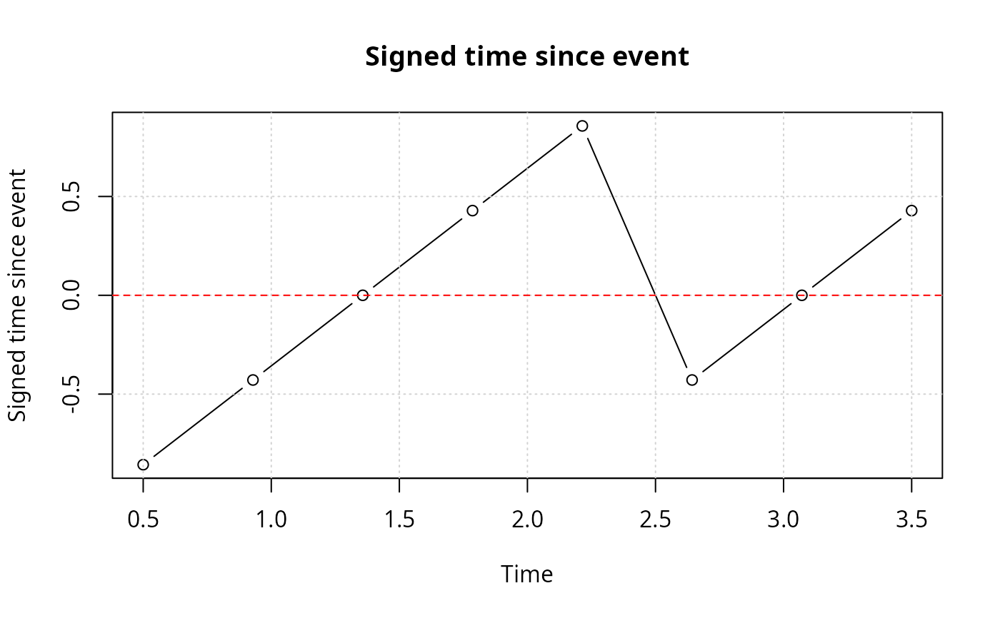

Calculates the time since the nearest event in a sequence, optionally using a custom time scale.
time_since_event(yvar, tvar = seq_along(yvar))
timeSinceEvent(...)A data frame with columns 'yvar', 'tvar', 'abs.tse' (absolute time since event), 'sign.tse' (signed time since event), and other helper columns.
Events are coded as 1 (or TRUE). Non-events are anything else. The result includes absolute and signed distances to events.
## Example 1: Basic usage with default time index
y <- c(0, 0, 1, 0, 0, 1, 0)
tse <- time_since_event(y)
print(tse)
#> yvar tvar abs.tse sign.tse ewin run tae tbe
#> 1 0 1 2 -2 1 NA NA -2
#> 2 0 2 1 -1 1 NA NA -1
#> 3 1 3 0 0 1 1 0 0
#> 4 0 4 1 1 1 1 1 -2
#> 5 0 5 1 -1 2 1 2 -1
#> 6 1 6 0 0 2 2 0 0
#> 7 0 7 1 1 2 2 1 NA
## Example 2: Custom (non-integer) time variable
y <- c(0, 0, 1, 0, 0, 0, 1, 0)
t <- seq(0.5, 3.5, length.out = length(y))
tse <- time_since_event(y, t)
print(tse)
#> yvar tvar abs.tse sign.tse ewin run tae tbe
#> 1 0 0.5000000 0.8571429 -0.8571429 1 NA NA -0.8571429
#> 2 0 0.9285714 0.4285714 -0.4285714 1 NA NA -0.4285714
#> 3 1 1.3571429 0.0000000 0.0000000 1 1 0.0000000 0.0000000
#> 4 0 1.7857143 0.4285714 0.4285714 1 1 0.4285714 -1.2857143
#> 5 0 2.2142857 0.8571429 0.8571429 1 1 0.8571429 -0.8571429
#> 6 0 2.6428571 0.4285714 -0.4285714 2 1 1.2857143 -0.4285714
#> 7 1 3.0714286 0.0000000 0.0000000 2 2 0.0000000 0.0000000
#> 8 0 3.5000000 0.4285714 0.4285714 2 2 0.4285714 NA
## Example 3: Plotting the signed time since event
plot(sign.tse ~ tvar, data = tse, type = "b",
main = "Signed time since event",
xlab = "Time", ylab = "Signed time since event")
grid()
abline(h = 0, col = "red", lty = 2)
